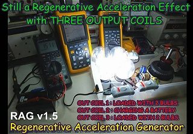

March 17, 2013 - DLE-TEST16 : Following the successful tests of CHARGING A BATTERY UNDER LOAD in the DLE-TEST15, here is a new test with the RAG v1.5 (Regenerative Acceleration Generator) with 3 regenerative coils (Regen). In this test, the 1st Regen coil is loaded with 2 high power LED bulbs (SMD type), the 2nd Regen coil recharge a 12V Lead battery and the 3rd Regen coil is loaded with 2 high power LED bulbs (SMD type). The turn speed rate (RPM), the DC voltage/current at the input and battery voltage/current parameters are measured in real time while the load are connected sequentially. he RAG v1.5 is a replication of the Thane C. Heins' ReGenX of Potential Difference Inc. Canada.
The 2nd and the 3rd Regen coils are placed so as to fully cancel the cogging torque produced by the magnetic attraction between the rotor magnets and the cores of the Regen coils. This cogging torque generates a bad magnetic drag effect which consumes power.
Below the setup of the TEST-DLE16 :

A Fluke 123 oscilloscope is used as a data logger for recording
the charging curve of the 12V lead battery (1.3Ah/20HR).


TESTS RESULTS on the RAG v1.4 :
The REGENERATIVE ACCELERATION EFFECT is stil present here in this setup. When the 1st and the 3rd Regen coils are loaded with FOUR LED bulbs and simultaneously the 2nd Regen coil recharges the 12 V battery, the RPM speed increases and the power drops at the input.


Below the video of the recharging test of the 12 V battery with the RAG v1.5
Documents and references (courtesy of Thane C. Heins CEO of PDI Canada ) :
Look at the demonstration of the ReGen-X MOTOR COIL FLUX HARVESTING done by Thane C. Heins,
Stay tuned,
Email: jnaudin509@aol.com
NEXT TEST